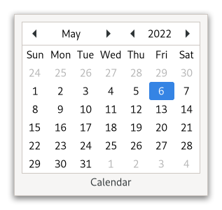

Gtk.Calendar¶
Example¶

- Subclasses:
None
Methods¶
- Inherited:
Gtk.Widget (183), GObject.Object (37), Gtk.Accessible (17), Gtk.Buildable (1)
- Structs:
class |
|
|
|
|
|
|
|
|
|
|
|
|
|
|
|
|
|
|
|
|
|
|
|
|
|
|
|
|
|
|
|
|
Virtual Methods¶
- Inherited:
Gtk.Widget (25), GObject.Object (7), Gtk.Accessible (6), Gtk.Buildable (9)
Properties¶
- Inherited:
Name |
Type |
Flags |
Short Description |
|---|---|---|---|
r/w/en |
|||
r/w/en |
|
||
r/w/en |
|
||
r/w/en |
|||
r/w/en |
|||
r/w/en |
|||
r/w/en |
|
Signals¶
- Inherited:
Name |
Short Description |
|---|---|
Emitted when the user selects a day. |
|
Emitted when the user switches to the next month. |
|
Emitted when user switches to the next year. |
|
Emitted when the user switches to the previous month. |
|
Emitted when user switches to the previous year. |
Fields¶
- Inherited:
Class Details¶
- class Gtk.Calendar(**kwargs)¶
- Bases:
- Abstract:
No
Displays a Gregorian calendar, one month at a time.
<picture> <source srcset=”calendar-dark.png” media=”(prefers-color-scheme: dark)”> <img alt=”An example
Gtk.Calendar" src=”calendar.png”> </picture>A
GtkCalendarcan be created with [ctor`Gtk`.Calendar.new].The selected date can be retrieved from a
GtkCalendarusing [method`Gtk`.Calendar.get_date]. It can be altered with [method`Gtk`.Calendar.set_date].To place a visual marker on a particular day, use [method`Gtk`.Calendar.mark_day] and to remove the marker, [method`Gtk`.Calendar.unmark_day]. Alternative, all marks can be cleared with [method`Gtk`.Calendar.clear_marks].
Users should be aware that, although the Gregorian calendar is the legal calendar in most countries, it was adopted progressively between 1582 and 1929. Display before these dates is likely to be historically incorrect.
- Shortcuts and Gestures
GtkCalendarsupports the following gestures:Scrolling up or down will switch to the previous or next month.
Date strings can be dropped for setting the current day.
- CSS nodes
`` calendar.view ├── header │ ├── button │ ├── stack.month │ ├── button │ ├── button │ ├── label.year │ ╰── button ╰── grid
╰── label[.day-name][.week-number][.day-number][.other-month][.today]
GtkCalendarhas a main node with name calendar. It contains a subnode called header containing the widgets for switching between years and months.The grid subnode contains all day labels, including week numbers on the left (marked with the .week-number css class) and day names on top (marked with the .day-name css class).
Day labels that belong to the previous or next month get the .other-month style class. The label of the current day get the .today style class.
Marked day labels get the
:selectedstate assigned.- classmethod new()[source]¶
- Returns:
a newly
GtkCalendarwidget- Return type:
Creates a new calendar, with the current date being selected.
- get_date()[source]¶
- Returns:
the
GDateTimerepresenting the selected date- Return type:
Returns a
GDateTimerepresenting the shown year, month and the selected day.The returned date is in the local time zone.
- get_day()[source]¶
- Returns:
the day of the selected date.
- Return type:
Gets the day of the selected date.
New in version 4.14.
- get_day_is_marked(day)[source]¶
- Parameters:
day (
int) – the day number between 1 and 31.- Returns:
whether the day is marked.
- Return type:
Returns if the day of the self is already marked.
- get_month()[source]¶
- Returns:
The month of the selected date (as a number between 0 and 11).
- Return type:
Gets the month of the selected date.
New in version 4.14.
- get_show_day_names()[source]¶
- Returns:
Whether the calendar shows day names.
- Return type:
Returns whether self is currently showing the names of the week days.
This is the value of the [property`Gtk`.Calendar:show-day-names] property.
- get_show_heading()[source]¶
- Returns:
Whether the calendar is showing a heading.
- Return type:
Returns whether self is currently showing the heading.
This is the value of the [property`Gtk`.Calendar:show-heading] property.
- get_show_week_numbers()[source]¶
- Returns:
Whether the calendar is showing week numbers.
- Return type:
Returns whether self is showing week numbers right now.
This is the value of the [property`Gtk`.Calendar:show-week-numbers] property.
- get_year()[source]¶
- Returns:
the year of the selected date.
- Return type:
Gets the year of the selected date.
New in version 4.14.
- mark_day(day)[source]¶
- Parameters:
day (
int) – the day number to mark between 1 and 31.
Places a visual marker on a particular day of the current month.
- select_day(date)[source]¶
- Parameters:
date (
GLib.DateTime) – aGDateTimerepresenting the day to select
Switches to date's year and month and select its day.
Deprecated since version 4.20: Use [method`Calendar`.set_date] instead.
- set_date(date)[source]¶
- Parameters:
date (
GLib.DateTime) – aGDateTimerepresenting the day to select
Switches to date's year and month and selects its day.
New in version 4.20.
- set_day(day)[source]¶
- Parameters:
day (
int) – The desired day for the selected date (as a number between 1 and 31).
Sets the day for the selected date.
The new date must be valid. For example, setting the day to 31 when the month is February will fail.
New in version 4.14.
- set_month(month)[source]¶
- Parameters:
month (
int) – The desired month for the selected date (as a number between 0 and 11).
Sets the month for the selected date.
The new date must be valid. For example, setting the month to 1 (February) when the day is 31 will fail.
New in version 4.14.
- set_show_day_names(value)[source]¶
- Parameters:
value (
bool) – Whether to show day names above the day numbers
Sets whether the calendar shows day names.
- set_show_heading(value)[source]¶
- Parameters:
value (
bool) – Whether to show the heading in the calendar
Sets whether the calendar should show a heading.
The heading contains the current year and month as well as buttons for changing both.
- set_show_week_numbers(value)[source]¶
- Parameters:
value (
bool) – whether to show week numbers alongside the days
Sets whether week numbers are shown in the calendar.
- set_year(year)[source]¶
- Parameters:
year (
int) – The desired year for the selected date (within [struct`GLib`.DateTime] limits, i.e. from 0001 to 9999).
Sets the year for the selected date.
The new date must be valid. For example, setting the year to 2023 when the date is February 29 will fail.
New in version 4.14.
Signal Details¶
- Gtk.Calendar.signals.day_selected(calendar)¶
- Signal Name:
day-selected- Flags:
- Parameters:
calendar (
Gtk.Calendar) – The object which received the signal
Emitted when the user selects a day.
- Gtk.Calendar.signals.next_month(calendar)¶
- Signal Name:
next-month- Flags:
- Parameters:
calendar (
Gtk.Calendar) – The object which received the signal
Emitted when the user switches to the next month.
- Gtk.Calendar.signals.next_year(calendar)¶
- Signal Name:
next-year- Flags:
- Parameters:
calendar (
Gtk.Calendar) – The object which received the signal
Emitted when user switches to the next year.
- Gtk.Calendar.signals.prev_month(calendar)¶
- Signal Name:
prev-month- Flags:
- Parameters:
calendar (
Gtk.Calendar) – The object which received the signal
Emitted when the user switches to the previous month.
- Gtk.Calendar.signals.prev_year(calendar)¶
- Signal Name:
prev-year- Flags:
- Parameters:
calendar (
Gtk.Calendar) – The object which received the signal
Emitted when user switches to the previous year.
Property Details¶
- Gtk.Calendar.props.date¶
- Name:
date- Type:
- Default Value:
- Flags:
The selected date.
This property gets initially set to the current date.
- Gtk.Calendar.props.day¶
- Name:
day- Type:
- Default Value:
1- Flags:
The selected day (as a number between 1 and 31).
Deprecated since version 4.20: This property will be removed in GTK 5. Use [property`Calendar`:date] instead.
- Gtk.Calendar.props.month¶
- Name:
month- Type:
- Default Value:
0- Flags:
The selected month (as a number between 0 and 11).
This property gets initially set to the current month.
Deprecated since version 4.20: This property will be removed in GTK 5. Use [property`Calendar`:date] instead.
- Gtk.Calendar.props.show_day_names¶
- Name:
show-day-names- Type:
- Default Value:
- Flags:
Determines whether day names are displayed.
- Gtk.Calendar.props.show_heading¶
- Name:
show-heading- Type:
- Default Value:
- Flags:
Determines whether a heading is displayed.
- Gtk.Calendar.props.show_week_numbers¶
- Name:
show-week-numbers- Type:
- Default Value:
- Flags:
Determines whether week numbers are displayed.
- Gtk.Calendar.props.year¶
- Name:
year- Type:
- Default Value:
1- Flags:
The selected year.
This property gets initially set to the current year.
Deprecated since version 4.20: This property will be removed in GTK 5. Use [property`Calendar`:date] instead.